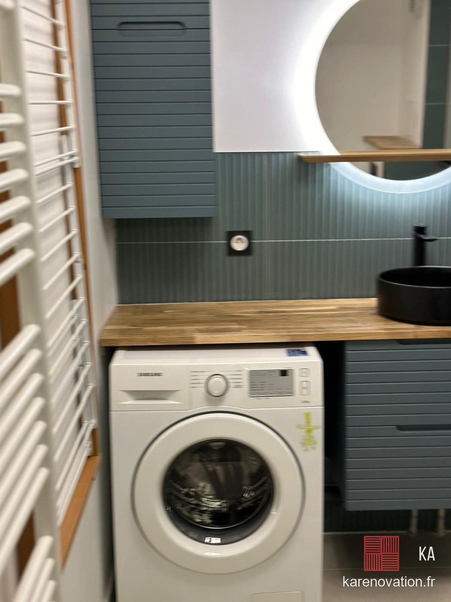
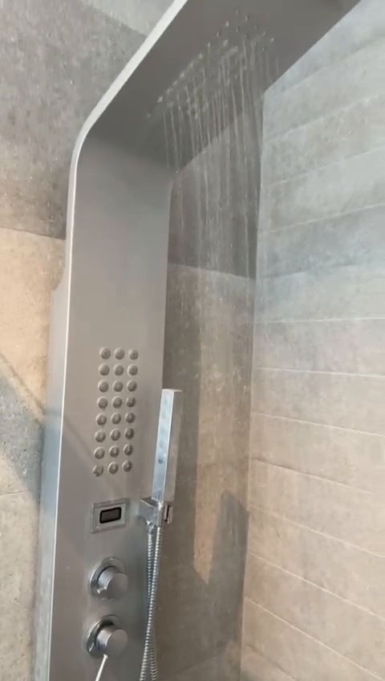

Accueil · Plombier salle de bain
Plombier · salle de bainVotre plombier salle de bain
Les tuyaux ne se voient plus une fois le carrelage posé : c'est pour ça que la plomberie se fait avec soin, avant tout le reste.
La plomberie, la base d'une salle de bain réussie
Une douche qui s'évacue bien, une pression correcte au robinet, aucune fuite derrière le carrelage : tout se joue dans la plomberie. Quand nous rénovons une salle de bain, nous reprenons les arrivées d'eau et les évacuations avant de fermer les murs.
Vous cherchez un plombier pour votre salle de bain ? Chez KA Rénovation, le plombier travaille avec le carreleur et le plaquiste sur le même chantier : les réseaux sont pensés en fonction de l'emplacement final de chaque équipement.
Nos travaux de plomberie
- Arrivées d'eau chaude et froide, en multicouche ou en cuivre
- Évacuations de la douche, de la vasque et du WC, avec la bonne pente
- Déplacement de la douche, du WC ou du meuble vasque
- Raccordement de la douche à l'italienne, du receveur ou du caniveau
- Pose du bâti-support de WC suspendu
- Pose de la robinetterie, de la colonne de douche et des mitigeurs
Déplacer un équipement ?
On peut souvent changer la place de la douche ou du WC pour mieux organiser la pièce. Tout dépend du passage de l'évacuation et de la pente disponible : nous le vérifions lors de la visite, avant d'établir le devis.



Questions fréquentes
Faites-vous seulement la plomberie ?
Nous intervenons sur la plomberie dans le cadre de la rénovation d'une salle de bain, d'une salle d'eau ou de toilettes, souvent avec le carrelage et le placo. Dites-nous votre projet, nous vous répondons.
Peut-on déplacer la douche ou le WC ?
Souvent, oui. La faisabilité dépend de l'évacuation et de la pente : nous la vérifions sur place.
Le devis est-il gratuit ?
Oui. Envoyez-nous quelques photos, puis nous venons voir la pièce pour un devis détaillé.
Devis gratuit après visite sur place. Envoyez-nous quelques photos de votre pièce pour une première estimation, puis nous fixons ensemble un rendez-vous.
Envoyer mes photos Appeler le 07 63 14 76 27Nos autres prestations
Nos conseils
Plombier salle de bain par département
Parlons de
votre salle de bain.
Envoyez-nous des photos de votre pièce pour une première estimation, puis on fixe ensemble un rendez-vous pour le devis sur place.
07 63 14 76 27Fermé le dimanche
depuis Chanteloup-les-Vignes (78)